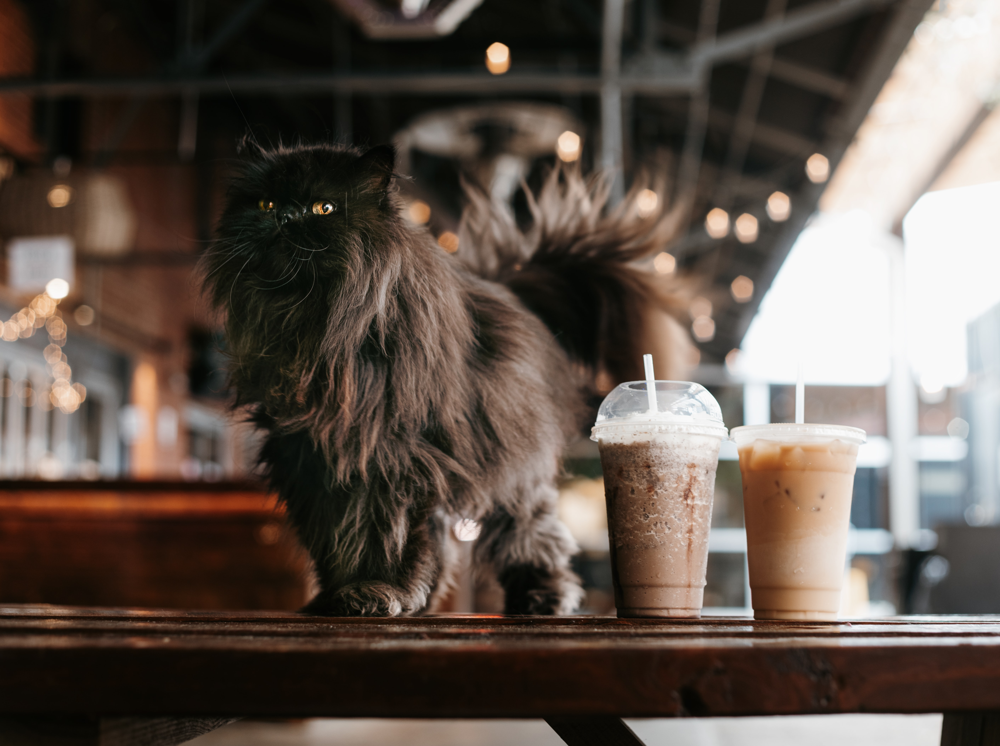
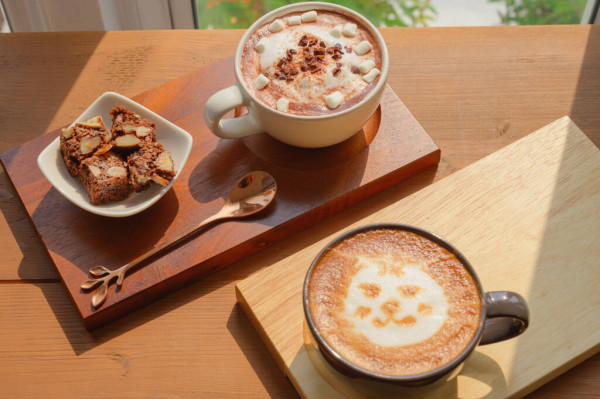
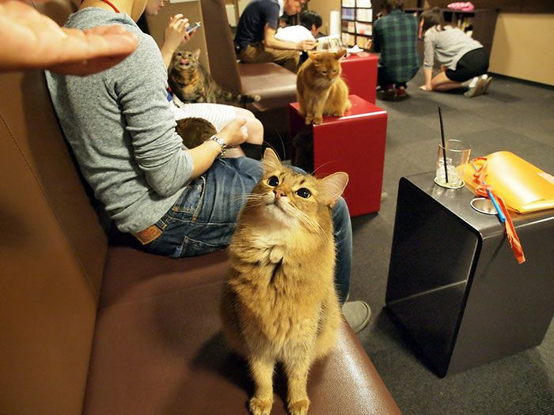
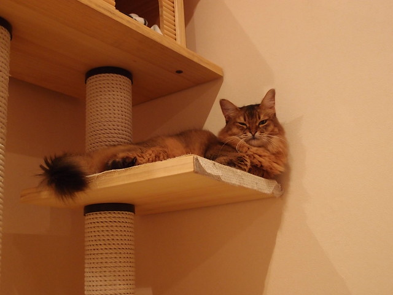
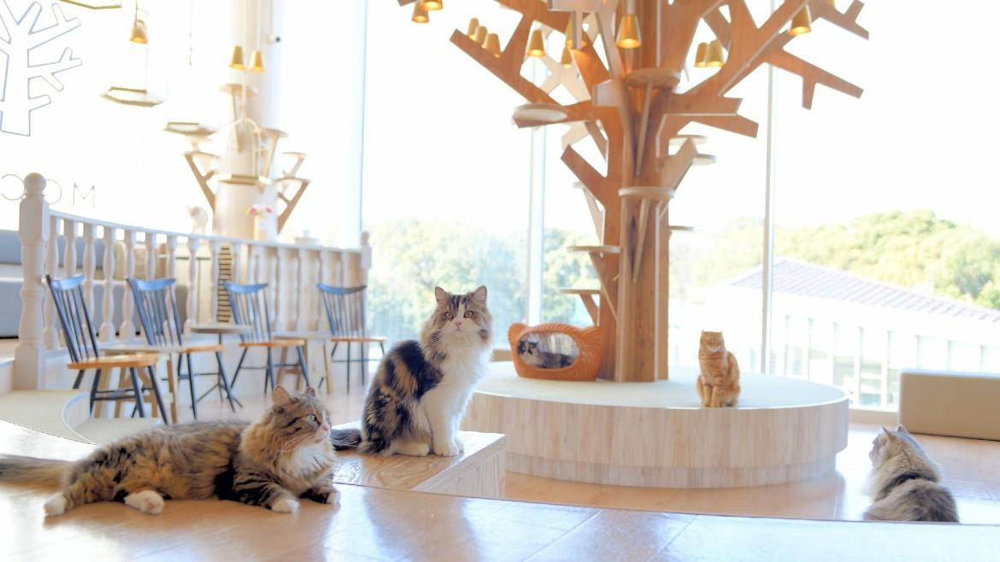
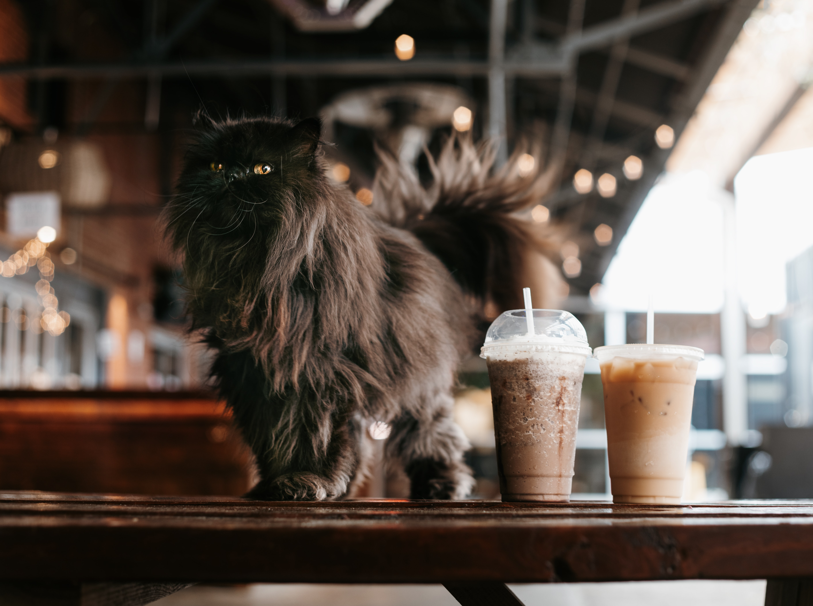
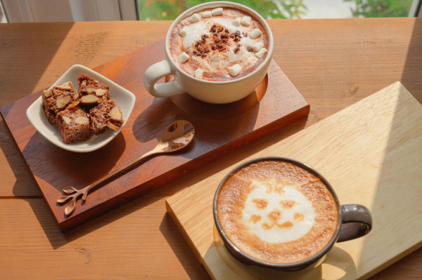
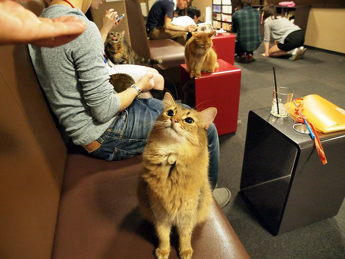
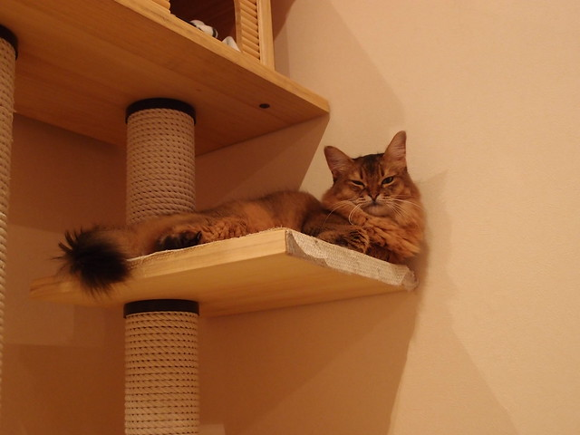
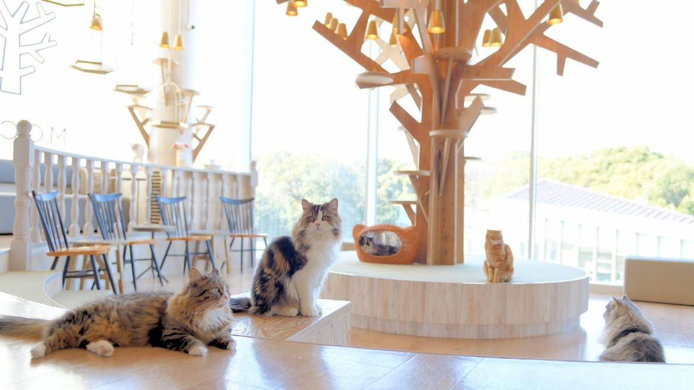

¿Qué es un cat café?
Un café de gatos (猫カフェ) es un establecimiento público en el que sus clientes pueden jugar con gatos u observarlos. Suele ser un establecimiento en el que se sirve café o infusiones, y algunos disponen de una sección de lectura. Los clientes pagan una entrada que suele ser por períodos de tiempo. Para poder ejercer la actividad es obligatorio cumplir con estrictos requerimientos y regulaciones para asegurar la salud y el bienestar de los animales y los clientes, y estar en posesión de una licencia.
Quienes visitan este local tan felino disfrutan del café que ofrece el establecimiento mientras dan de comer a los gatos, o pasan las horas zambullidos entre las páginas de algún libro con un animal en el regazo. Los más tecnófilos, por su parte, aprovechan para engachar sus dispositivos móviles a la red wifi con la que cuenta el local, mientras disfrutan de la compañía de los peludos habitantes del espacio. La gata Bernardita, una hembra tricolor, lista y cariñosa; el gato Roco, del que dicen que encandila al resto de felinas y clientela femenina con su intensa mirada de color verde; y la cariñosa y charlatana Pixulina. Estos son algunos de los felinos que viven de forma temporal en Gala. ¿El motivo? Todos ellos buscan un adoptante que les dé el cariño y los cuidados que necesitan.
Gala es un espacio pensado para que los felinos que lo habitan encuentren el hogar que tanto tiempo llevan buscando. "Nuestra prioridad es el bienestar de los gatos. Si nosotros cuidamos de ellos, ellos cuidarán de nosotros", añade Aznar.
 








